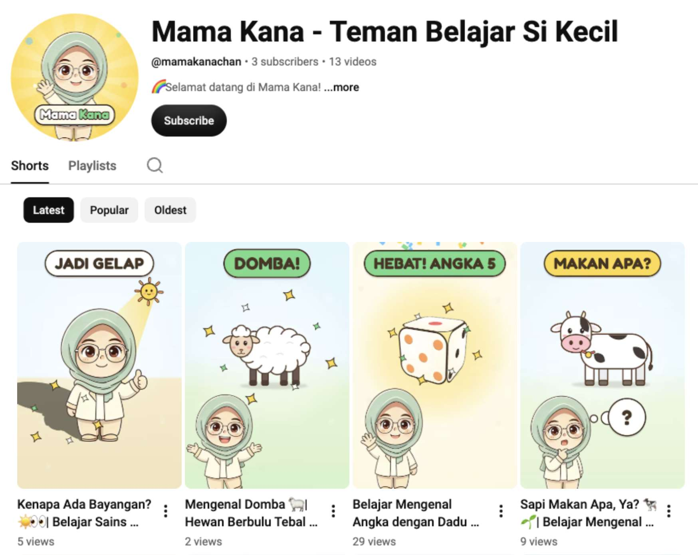
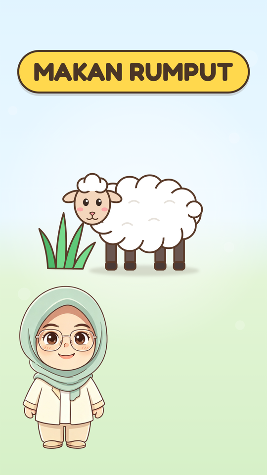
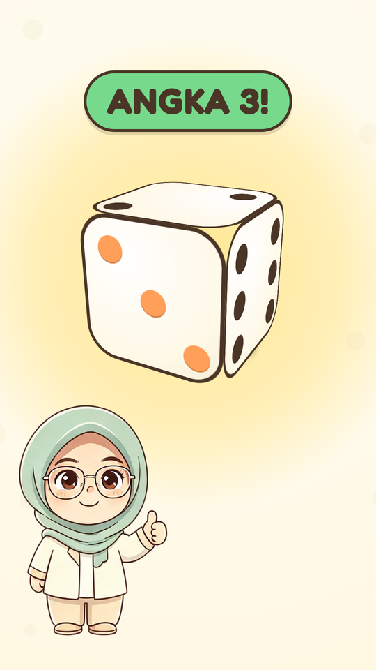

● Nº 01 · Masih nambah
Mama Kana, ayo belajar.
Animasi edukasi untuk balita di YouTube Shorts — dan ya, ini video AI. Tiap episode dirakit bareng AI dari HTML, CSS, dan JavaScript, lalu direkam jadi video; format dan geraknya masih terus kuutak-atik.
13 episode sejauh ini — youtube.com/@mamakanachan
Baca ceritanya → Tonton di YouTube →

